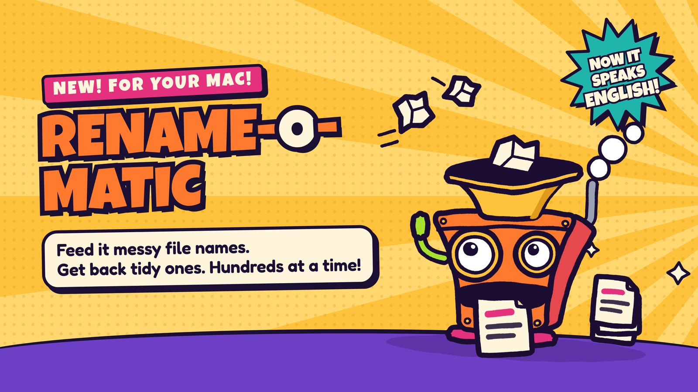
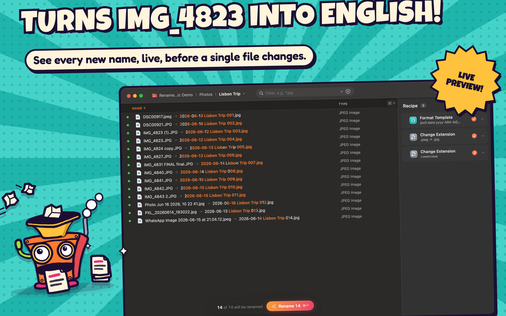
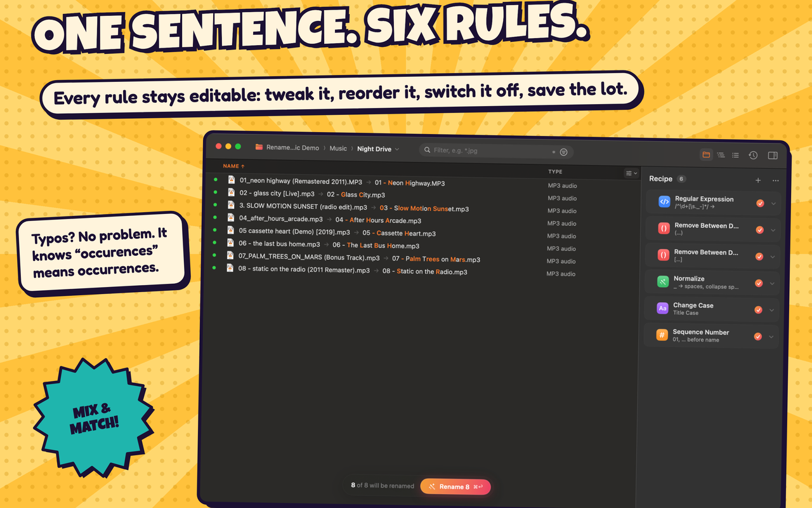
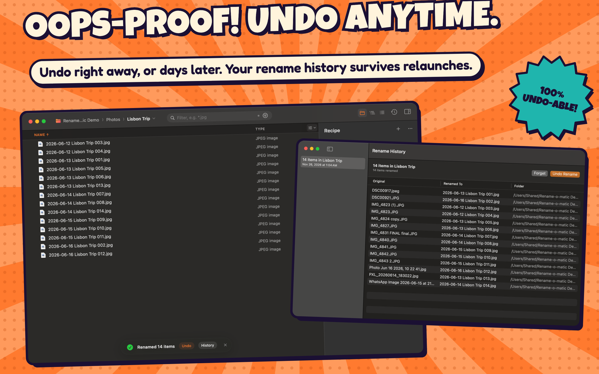

Turns IMG_4823 into English!
Rename-o-matic is a batch renamer for your Mac. Tell it what you want in plain English, or stack up rules yourself. Watch every new name appear live, then rename hundreds of files and folders in one go. Changed your mind? Undo it.
Just say what you want
Press ⌘K and type it the way you'd say it:
remove numbers from the start, drop the (Remastered) and [Live] stuff, underscores to spaces, title case, number them padded to 2 digits
Rename-o-matic turns the sentence into ready-made rules and shows them before you add them. It forgives typos, asks what you meant when it's stuck, and every rule stays editable. No AI, no internet: a fast, old-school parser runs right on your Mac.
See it before you do it
Every change previews live with the changed letters highlighted. Nothing touches the disk until you press Rename.

Rules, in any order
- Replace text, or use regex with case changes
- Strip (Remastered) and [Live], trim, truncate
- Nine case styles, from Title Case to kebab-case
- Number with 001, Roman numerals, letters or words
- Names from dates, photo EXIF and music tags
- Spaces ↔ underscores, strip accents, fix extensions

Undo anytime
Every rename is kept in a history. Undo the last one with a click, or go back days later and undo an older one, even after a relaunch. Duplicate and taken names are flagged before you rename, so nothing gets overwritten.
